Contents
MyMainScript
myNumOfColors = 256;
colorScale = 0:1/(myNumOfColors-1):1;
myColorScale = [ colorScale' colorScale' colorScale' ];
Reading images
img1 = imread();
img2 = imread();
img3 = imread();
myLinearContrastStretching
tic;
myLinearContrastStretching1 = myLinearContrastStretching(img1);
figure, image(img1), title('Image 1'),colormap(myColorScale), colorbar, daspect([1 1 1]);
figure, image(myLinearContrastStretching1), title('Linear Contrast Stretching on Image 1'), colormap(myColorScale), colorbar, daspect([1 1 1]);
myLinearContrastStretching2 = myLinearContrastStretching(img2);
figure, image(img2), title('Image 2'),colormap(myColorScale), colorbar, daspect([1 1 1]);
figure, image(myLinearContrastStretching2), title('Linear Contrast Stretching on Image 2'),colormap(myColorScale), colorbar, daspect([1 1 1]);
myLinearContrastStretching3 = myLinearContrastStretching(img3);
figure, image(img3), title('Image 3'),colormap(myColorScale), colorbar, daspect([1 1 1]);
figure, image(myLinearContrastStretching3), title('Linear Contrast Stretching on Image 3'),colormap(myColorScale), colorbar, daspect([1 1 1]);
toc;
Elapsed time is 0.664958 seconds.
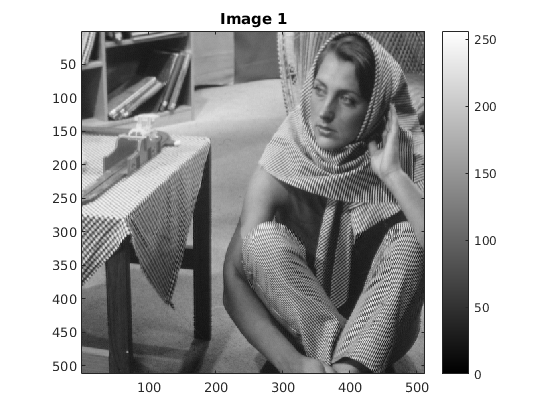 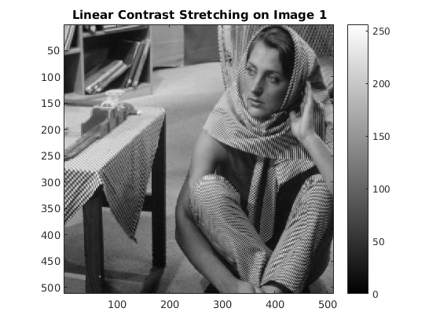 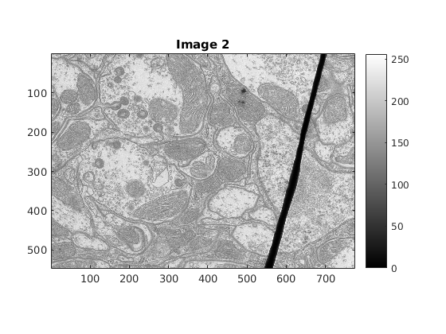 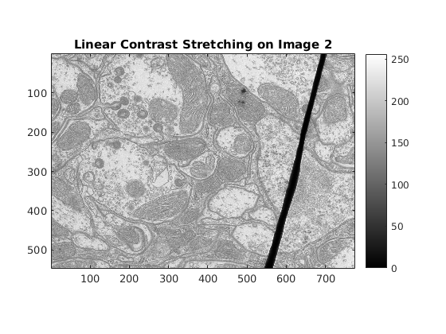 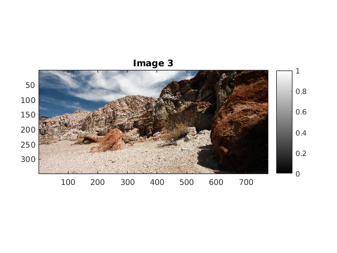 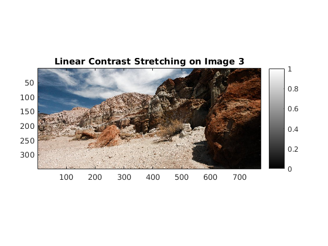
myHE
tic;
myHE1 = myHE(img1);
figure, image(img1), title('Image 1'),colormap(myColorScale), colorbar, daspect([1 1 1]);
figure, imagesc(myHE1), title('Histogram Equalisation 1'), colormap(myColorScale), colorbar, daspect([1 1 1]);
myHE2 = myHE(img2);
figure, image(img2), title('Image 2'),colormap(myColorScale), colorbar, daspect([1 1 1]);
figure, imagesc(myHE2), title('Histogram Equalisation 2'), colormap(myColorScale), colorbar, daspect([1 1 1]);
myHE3 = myHE(img3);
figure, image(img3), title('Image 3'),colormap(myColorScale), colorbar, daspect([1 1 1]);
figure, imagesc(myHE3), title('Histogram Equalisation 3'), colormap(myColorScale), colorbar, daspect([1 1 1]);
toc;
Elapsed time is 0.681521 seconds.
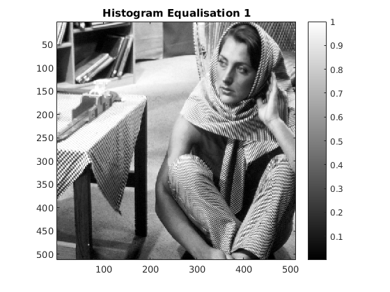 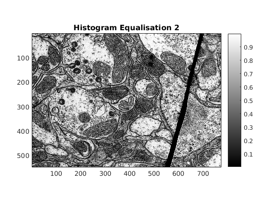 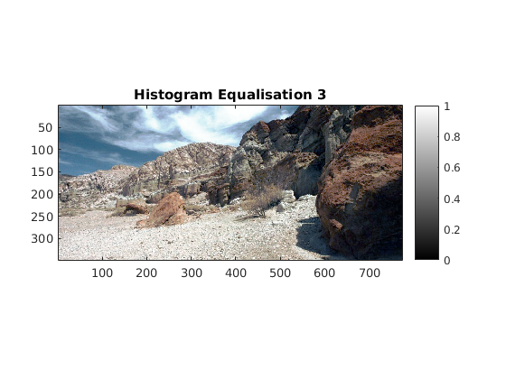
Adaptive Histogram Equalization
tic;
myAHE1= myAHE(img1, 30);
figure, image(img1), title('Image 1'),colormap(myColorScale), colorbar, daspect([1 1 1]);
figure, imagesc(myAHE1), title('AHE on Image 1 with 61 x 61'), colormap(myColorScale), colorbar, daspect([1 1 1]);
myAHE2= myAHE(img2, 30);
figure, image(img2), title('Image 2'),colormap(myColorScale), colorbar, daspect([1 1 1]);
figure, imagesc(myAHE2), title('AHE on Image 1 with 61 x 61'), colormap(myColorScale), colorbar, daspect([1 1 1]);
myAHE3= myAHE(img3, 30);
figure, image(img3), title('Image 3'),colormap(myColorScale), colorbar, daspect([1 1 1]);
figure, imagesc(myAHE3), title('AHE on Image 1 with 61 x 61'), colormap(myColorScale), colorbar, daspect([1 1 1]);
toc;
Elapsed time is 70.794136 seconds.
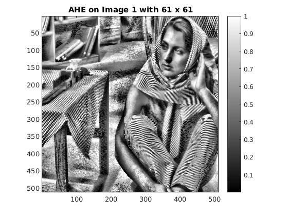 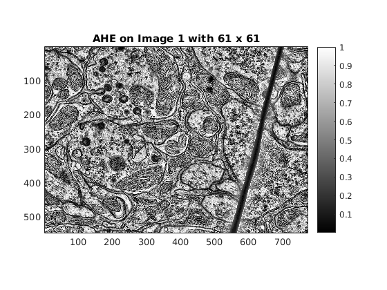 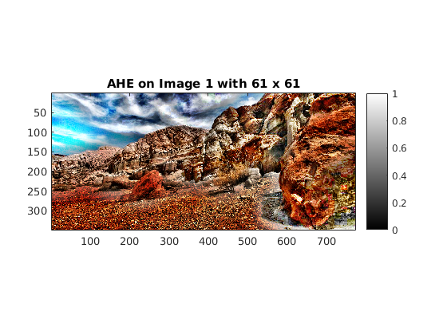
Redoing AHE by changing the window sizes
tic;
myAHE1s= myAHE(img1, 2);
figure, image(img1), title('Image 1'),colormap(myColorScale), colorbar, daspect([1 1 1]);
figure, imagesc(myAHE1s), title('AHE on Image 1 with window 5 x 5'), colormap(myColorScale), colorbar, daspect([1 1 1]);
myAHE1l= myAHE(img1, 100);
figure, imagesc(myAHE1l), title('AHE on Image 1 with window 201 x 201'), colormap(myColorScale), colorbar, daspect([1 1 1]);
myAHE2s= myAHE(img2, 2);
figure, image(img2), title('Image 2'),colormap(myColorScale), colorbar, daspect([1 1 1]);
figure, imagesc(myAHE2s), title('AHE on Image 2 with window 5 x 5'), colormap(myColorScale), colorbar, daspect([1 1 1]);
myAHE2l= myAHE(img2, 100);
figure, imagesc(myAHE2l), title('AHE on Image 2 with window 201 x 201'), colormap(myColorScale), colorbar, daspect([1 1 1]);
myAHE3s= myAHE(img3, 2);
figure, image(img3), title('Image 3'),colormap(myColorScale), colorbar, daspect([1 1 1]);
figure, imagesc(myAHE3s), title('AHE on Image 3 with window 5 x 5'), colormap(myColorScale), colorbar, daspect([1 1 1]);
myAHE3l= myAHE(img3, 100);
figure, imagesc(myAHE3l), title('AHE on Image 3 with window 201 x 201'), colormap(myColorScale), colorbar, daspect([1 1 1]);
toc;
Elapsed time is 178.053697 seconds.
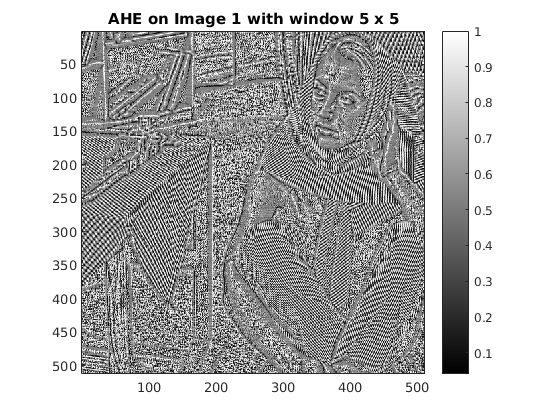

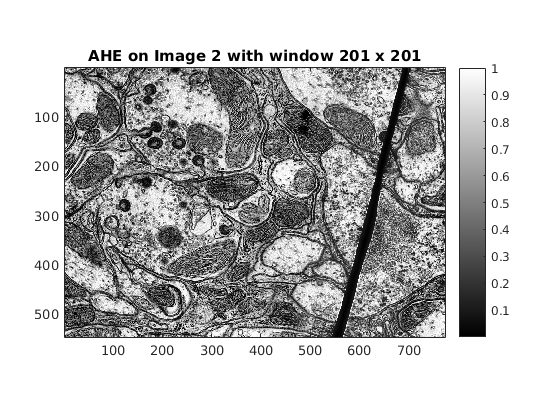 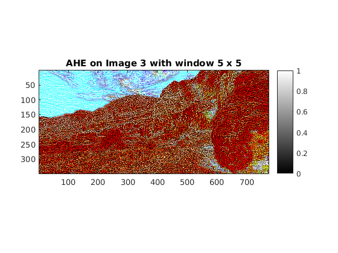 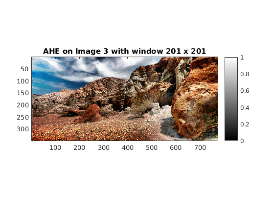
Contrast-limited Adaptive Histogram Equalization
tic;
myCLAHE1= myCLAHE(img1, 30, 0.005);
figure, image(img1), title('Image 1'),colormap(myColorScale), colorbar, daspect([1 1 1]);
figure, imagesc(myCLAHE1), title('CLAHE on Image 1 with window 61 x 61 and threshold 0.005'), colormap(myColorScale), colorbar, daspect([1 1 1]);
myCLAHE2= myCLAHE(img2, 30, 0.005);
figure, image(img2), title('Image 2'),colormap(myColorScale), colorbar, daspect([1 1 1]);
figure, imagesc(myCLAHE2), title('CLAHE on Image 2 with window 61 x 61 and threshold 0.005'), colormap(myColorScale), colorbar, daspect([1 1 1]);
myCLAHE3= myCLAHE(img3, 30, 0.005);
figure, image(img3), title('Image 3'),colormap(myColorScale), colorbar, daspect([1 1 1]);
figure, imagesc(myCLAHE3), title('CLAHE on Image 3 with window 61 x 61 and threshold 0.005'), colormap(myColorScale), colorbar, daspect([1 1 1]);
toc;
Elapsed time is 74.361221 seconds.
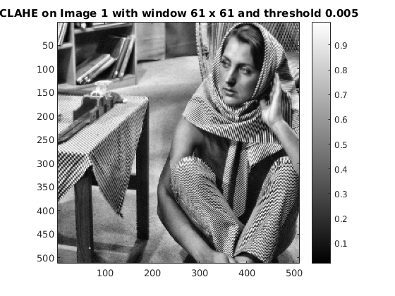 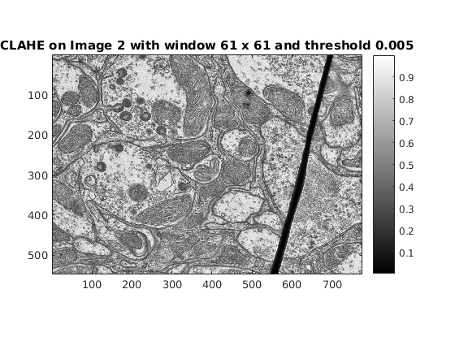 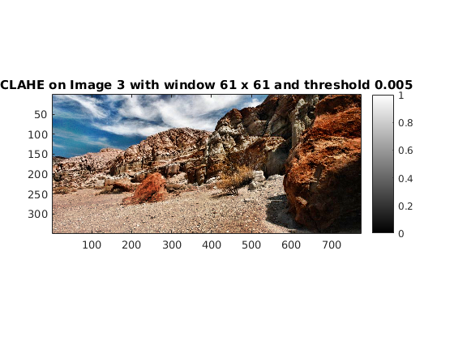
Contrast-limited Adaptive Histogram Equalization with value of threshold half of that tuned before
tic;
myCLAHE1= myCLAHE(img1, 30, 0.0025);
figure, image(img1), title('Image 1'),colormap(myColorScale), colorbar, daspect([1 1 1]);
figure, imagesc(myCLAHE1), title('CLAHE on Image 1 with window 61 x 61 and threshold 0.0025'), colormap(myColorScale), colorbar, daspect([1 1 1]);
myCLAHE2= myCLAHE(img2, 30, 0.0025);
figure, image(img2), title('Image 2'),colormap(myColorScale), colorbar, daspect([1 1 1]);
figure, imagesc(myCLAHE2), title('CLAHE on Image 2 with window 61 x 61 and threshold 0.0025'), colormap(myColorScale), colorbar, daspect([1 1 1]);
myCLAHE3= myCLAHE(img3, 30, 0.0025);
figure, image(img3), title('Image 3'),colormap(myColorScale), colorbar, daspect([1 1 1]);
figure, imagesc(myCLAHE3), title('CLAHE on Image 3 with window 61 x 61 and threshold 0.0025'), colormap(myColorScale), colorbar, daspect([1 1 1]);
toc;
Elapsed time is 83.692562 seconds.
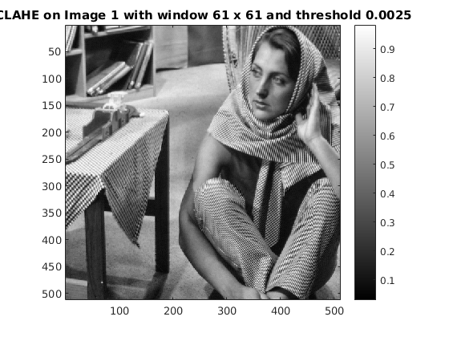

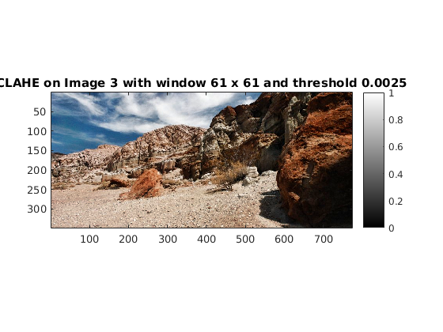